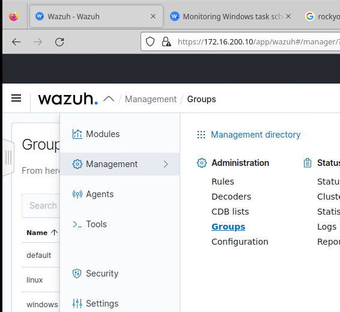
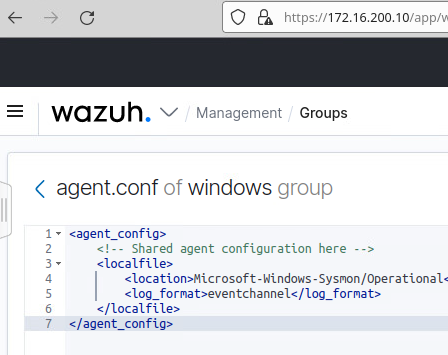
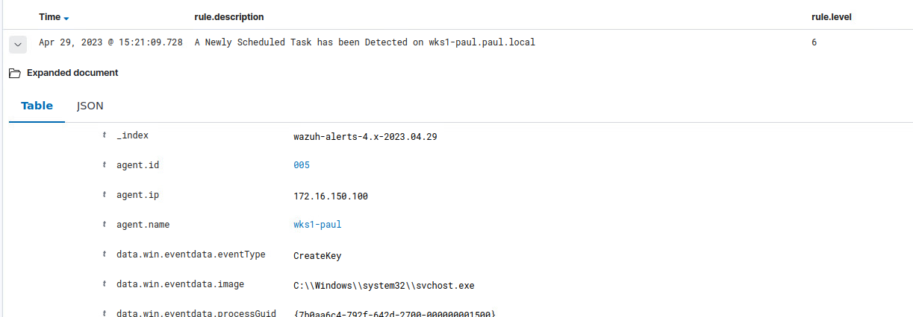
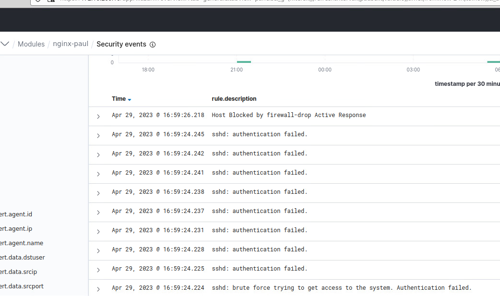

Threat Hunting
APT:
DragonFly as defined by MITRE “Dragonfly is a cyber espionage group that has been attributed to Russia’s Federal Security Service (FSB) Center 16. Active since at least 2010, Dragonfly has targeted defense and aviation companies, government entities, companies related to industrial control systems, and critical infrastructure sectors worldwide through supply chain, spearphishing, and drive-by compromise attacks”
TTPs:
- Schedule Tasks Creation
- Brute Force Attack
- Phishing Email
Detection and Prevention:
Schedule Task Creation:
Installing Sysmon:
Windows:
- Download Sysmon at this link: https://docs.microsoft.com/en-us/sysinternals/downloads/sysmon
- Download the sysmon XML config file: https://wazuh.com/resources/blog/emulation-of-attack-techniques-and-detection-with-wazuh/sysmonconfig.xml
- Now in the downloads folder run in an admin Powershell prompt
.\Sysmon.exe -accepteula -i .\sysmonconfig.xmlContents of the XML:
- <Event xmlns="http://schemas.microsoft.com/win/2004/08/events/event">
- <System>
<Provider Name="Microsoft-Windows-Sysmon" Guid="{5770385f-c22a-43e0-bf4c-06f5698ffbd9}" />
<EventID>12</EventID>
<Version>2</Version>
<Level>4</Level>
<Task>12</Task>
<Opcode>0</Opcode>
<Keywords>0x8000000000000000</Keywords>
<TimeCreated SystemTime="2022-04-13T11:59:41.5535365Z" />
<EventRecordID>184</EventRecordID>
<Correlation />
<Execution ProcessID="5944" ThreadID="4436" />
<Channel>Microsoft-Windows-Sysmon/Operational</Channel>
<Computer>DESKTOP-4E0BQFT</Computer>
<Security UserID="S-1-5-18" />
</System>
- <EventData>
<Data Name="RuleName">technique_id=T1053,technique_name=Scheduled Task</Data>
<Data Name="EventType">CreateKey</Data>
<Data Name="UtcTime">2022-04-13 11:59:41.545</Data>
<Data Name="ProcessGuid">{76e50f37-2fc0-6244-1300-000000000300}</Data>
<Data Name="ProcessId">364</Data>
<Data Name="Image">C:\Windows\system32\svchost.exe</Data>
<Data Name="TargetObject">HKLM\SOFTWARE\Microsoft\Windows NT\CurrentVersion\Schedule\TaskCache\Tree\test-task</Data>
<Data Name="User">NT AUTHORITY\SYSTEM</Data>
</EventData>
</Event>Wazuh Server config for Sysmon:
- In the
/var/ossec/etc/shared/default/agent.confAdd the lines below
<agent_config os="windows">
<localfile>
<location>Microsoft-Windows-Sysmon/Operational</location>
<log_format>eventchannel</log_format>
</localfile>
</agent_config>- Next we must add the rule to the
/var/ossec/etc/rules/local_rules.xml
<group name="windows,sysmon,">
<rule id="115006" level="6">
<if_group>windows</if_group>
<field name="win.eventdata.ruleName" type="pcre2">^technique_id=T1053,technique_name=Scheduled Task$</field>
<field name="win.eventdata.eventType" type="pcre2">^CreateKey$</field>
<description>A Newly Scheduled Task has been Detected on $(win.system.computer)</description>
<mitre>
<id>T1053</id>
</mitre>
</rule>
<rule id="115007" level="0">
<if_sid>115006</if_sid>
<field name="win.eventdata.targetObject" type="pcre2">^HKLM\\\\SOFTWARE\\\\Microsoft\\\\Windows NT\\\\CurrentVersion\\\\Schedule\\\\TaskCache\\\\Tree\\\\Microsoft\\\\Windows\\\\UpdateOrchestrator$</field>
<description>Suppression rule for scheduled task created by update orchestrator</description>
</rule>
</group>Creating an Active Response Script:
- Create the file
C:\Program Files (x86)\ossec-agent\active-response\bin\analyze-scheduled-task.cmdand add the code below.
@echo off
setlocal enableDelayedExpansion
reg Query "HKLM\Hardware\Description\System\CentralProcessor\0" | find /i "x86" > NUL && SET OS=64BIT
if %OS%==64BIT (
SET logFile="%programfiles(x86)%\ossec-agent\logs\scheduled-tasks.log"
)
set input=
for /f "delims=" a
)
powershell -command "$string = '%input%'; $match = select-string 'HKLM\\\\SOFTWARE\\\\Microsoft\\\\Windows NT\\\\CurrentVersion\\\\Schedule\\\\TaskCache\\\\Tree.*\\\\(\S*)\\r\\n' -inputobject $string; $taskName = $match.Matches.groups[1].value; $task = Get-ScheduledTask | where TaskName -EQ $taskName; $jsonTask = $task.Actions | ConvertTo-Json -Compress; try{$stream = [System.IO.StreamWriter]::new( '%logFile%', $true );'{\"ScheduledTaskAR\": ' + $jsonTask + ', \"TaskName\": \"' + $taskName + '\"}' | ForEach-Object{ $stream.WriteLine( $_ ) }}finally{$stream.close()}; exit"Configure Wazuh Agent to Monitor Response Log:
-
In the wazuh manager webui go to groups.

-
Edit the windows group

-
Add the lines below
<localfile>
<location>logs\scheduled-tasks.log</location>
<log_format>syslog</log_format>
</localfile>If you don’t have a windows group can add the lines below to /var/ossec/etc/shared/default/agent.conf on the wazuh server.
<agent_config os="windows">
<localfile>
<location>logs\scheduled-tasks.log</location>
<log_format>syslog</log_format>
</localfile>
</agent_config>Now test to see if the scheduled-tasks.log is created
Run the command below to create a test task
schtasks /create /tn test-task /tr "C:\Windows\System32\calc.exe" /sc onlogon /ru System /fNow the file C:\Program Files (x86)\ossec-agent\logs\scheduled-tasks.log should be created. It will look something like:
{
"ScheduledTaskAR": {
"CimClass": {
"CimSuperClassName": "MSFT_TaskAction",
"CimSuperClass": {
"CimSuperClassName": null,
"CimSuperClass": null,
"CimClassProperties": "Id",
"CimClassQualifiers": "",
"CimClassMethods": "",
"CimSystemProperties": "Microsoft.Management.Infrastructure.CimSystemProperties"
},
"CimClassProperties": [
"Id",
"Arguments",
"Execute",
"WorkingDirectory"
],
"CimClassQualifiers": [],
"CimClassMethods": [],
"CimSystemProperties": {
"Namespace": "Root/Microsoft/Windows/TaskScheduler",
"ServerName": "DESKTOP-4E0BQFT",
"ClassName": "MSFT_TaskExecAction",
"Path": null
}
},
"CimInstanceProperties": [
{
"Name": "Id",
"Value": null,
"CimType": 14,
"Flags": "Property, NotModified, NullValue",
"IsValueModified": false
},
{
"Name": "Arguments",
"Value": null,
"CimType": 14,
"Flags": "Property, NotModified, NullValue",
"IsValueModified": false
},
{
"Name": "Execute",
"Value": "C:\\Windows\\System32\\calc.exe",
"CimType": 14,
"Flags": "Property, NotModified",
"IsValueModified": false
},
{
"Name": "WorkingDirectory",
"Value": null,
"CimType": 14,
"Flags": "Property, NotModified, NullValue",
"IsValueModified": false
}
],
"CimSystemProperties": {
"Namespace": "Root/Microsoft/Windows/TaskScheduler",
"ServerName": "DESKTOP-4E0BQFT",
"ClassName": "MSFT_TaskExecAction",
"Path": null
},
"Id": null,
"Arguments": null,
"Execute": "C:\\Windows\\System32\\calc.exe",
"WorkingDirectory": null,
"PSComputerName": null
},
"TaskName": "test-task"
}oNow delete the task
schtasks /delete /tn test-taskCreating the Rule:
On the Wazuh server add the lines below into /var/ossec/etc/rules/local_rules.xml inside the <group name=“windows,sysmon,“>
<rule id="115008" level="10">
<decoded_as>json</decoded_as>
<field name="ScheduledTaskAR.Arguments" type="pcre2" negate="yes">^null$</field>
<field name="TaskName" type="pcre2">(.|\s)*\S(.|\s)*</field>
<description>A new scheduled task "$(TaskName)" has been created on "$(ScheduledTaskAR.CimSystemProperties.ServerName)". The task will execute the command - "$(ScheduledTaskAR.Execute) $(ScheduledTaskAR.Arguments)".</description>
<mitre>
<id>T1053</id>
</mitre>
</rule>
<rule id="115009" level="10">
<decoded_as>json</decoded_as>
<field name="ScheduledTaskAR.Arguments" type="pcre2">^null$</field>
<field name="TaskName" type="pcre2">(.|\s)*\S(.|\s)*</field>
<description>A new scheduled task "$(TaskName)" has been created on "$(ScheduledTaskAR.CimSystemProperties.ServerName)". The task will execute the command - "$(ScheduledTaskAR.Execute)".</description>
<mitre>
<id>T1053</id>
</mitre>
</rule>Now restart wazuh manager on the wazuh server
systemctl restart wazuh-managerFinished Product
In the webui it should show up as below:

Brute Force Attacks:
Wazuh Server setup:
- In the
/var/ossec/etc/ossec.conffile make sure the lines below are not commented
<command>
<name>firewall-drop</name>
<executable>firewall-drop</executable>
<timeout_allowed>yes</timeout_allowed>
</command>- Now in the same file add the lines. There is a section towards the middle of the file that has <active-response> commented out and you can add this right below that.
<active-response>
<command>firewall-drop</command>
<location>local</location>
<rules_id>5763</rules_id>
<timeout>180</timeout>
</active-response>- Now restart the Wazuh manager service:
sudo systemctl restart wazuh-managerTesting:
- Run commands below to install hydra and trigger active response.
sudo apt update && sudo apt install -y hydra- Now hydra usage:
sudo hydra 4 -l <RHEL_USERNAME> -P <PASSWD_LIST.txt> <RHEL_IP> sshFinal Output:

Phishing Emails:
The file below is a document I made as a proof of concept for a set of instructions that could be given out to a corporation.